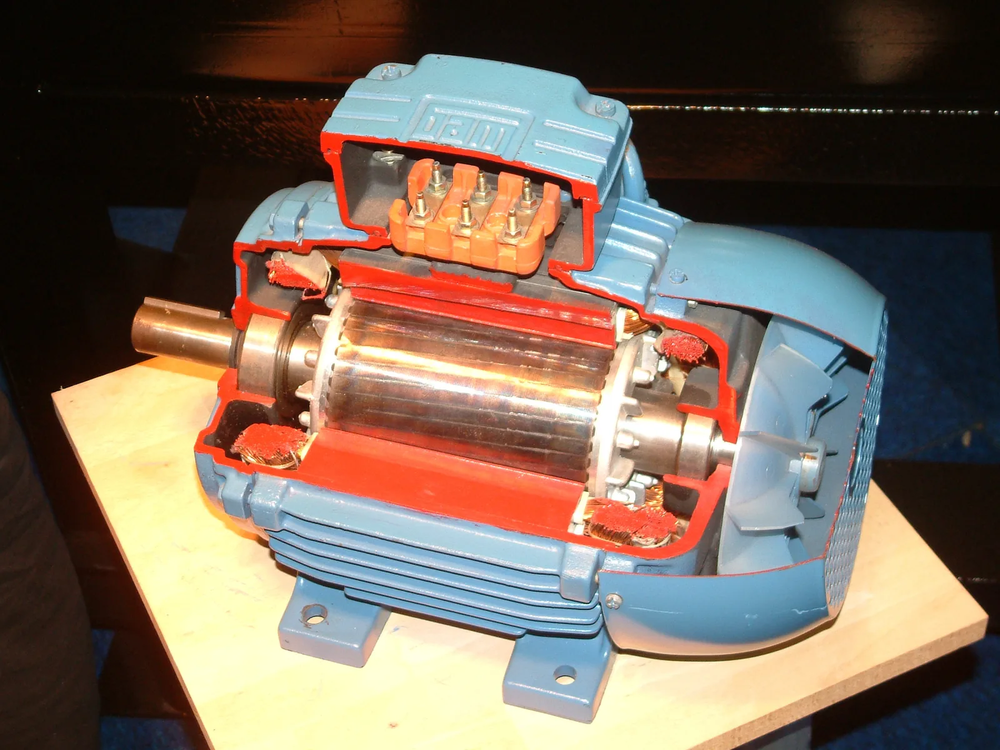

Voima virtajohtimeen: sähkömoottori ja kaiutin
Miksi kaiuttimen kartio värähtelee ja tuulettimen siivet pyörivät, vaikka kumpaakaan ei työnnä mikään näkyvä?
Pohjatiedot
- Magneettikenttä kohdistaa liikkuvaan varattuun hiukkaseen voiman, joka on kohtisuorassa nopeutta ja kenttää vastaanluku Varatun hiukkasen liike sähkö- ja magneettikentässä
- Suoran virtajohtimen magneettikenttä kiertää johdinta, ja sen suuruus on $B = \mu_0 I : (2\pi r)$luku Virtajohtimen ja käämin magneettikenttä
Ydinpolku: etene vaiheiden mukaan. Ydinpolkuun kuuluvat laskujen lisäksi tutkimukset, selitykset ja kuvaajat. Valinnainen-merkityt tehtävät tarjoavat lisäharjoittelua. Valinnaisia tehtäviä 4.
Pohdinta
Kun kaiutin soittaa bassoa, sen kartion näkee liikkuvan edestakaisin. Pöytätuulettimen siivet lähtevät pyörimään heti, kun pistoke työnnetään seinään. Kumpaakaan ei kosketa, eikä kummassakaan ole palavaa polttoainetta. Molemmissa on kuitenkin magneetti ja johdin, jossa kulkee sähkövirta.
Miten magneetti voi liikuttaa johdinta, jos johdin on kuparia, jota magneetti ei vedä puoleensa?
Valinnainen Kertaa: suoran johtimen magneettikenttä
Ennusta
Tee ennusteet ennen tutkimista 2 kysymystä
Ennuste 1: tunteeko vaaka virran?
Ennuste 2: johdin vinossa kenttään nähden
Tutki
Simulaatio
Käyttöohje
Säädä virtaa $I$ ja johtimen ja kentän välistä kulmaa $\alpha$, ja valitse magneetti ja kentässä olevan johtimen pituus $l$. Negatiivinen virta tarkoittaa, että virta kulkee johtimessa vastakkaiseen suuntaan. Sivukuvassa näkyvät vaaka, magneetti ja johdin sekä johtimeen kohdistuva voima punaisena nuolena, jonka pituus kuvaa voiman suuruutta. Yläkuvassa näet magneetin navat ylhäältä, vihreät kenttäviivat, johtimen kulman ja violetin virtanuolen. Voima osoittaa paperista ulos (piste ympyrässä) tai paperiin päin (risti ympyrässä). Vaa'an lukema on lukemat-rivillä ja vaa'an näytössä.
Mallin oletukset
Kenttä on napojen välissä homogeeninen ja niiden ulkopuolella nolla. Vain johtimen vaakasuora alaosa on kentässä; pystysuorien tulojohtimien voimat ovat vaakasuoria eivätkä muuta vaa'an lukemaa. Johdin on jäykästi kiinni telineessä, joten se ei liiku. Magneettien kenttien suuruuksia ei näytetä: ne määritetään mittauksista. Lukemat ovat mallin laskemia arvoja $0{,}01\,\text{g}$:n tarkkuudella, eivät mittauksia, eikä niissä ole mittausvirhettä.
Laskennan selitys
Kenttä kohdistaa johtimeen pystysuoran voiman $F = I l B \sin\alpha$. Newtonin kolmannen lain mukaan johdin kohdistaa magneettiin yhtä suuren vastakkaissuuntaisen voiman, joten vaaka näyttää lukeman
$$m = m_0 + \frac{F}{g}$$
missä $m_0 = 245{,}30\,\text{g}$ on lukema ilman virtaa ja $g = 9{,}81\,\text{m/s}^2$. Lukeman muutoksesta $\Delta m = m - m_0$ saadaan voima $F = \Delta m \cdot g$ ja siitä magneettivuon tiheys $B = F : (I l)$, kun johdin on kohtisuorassa kenttää vastaan.
Virtavaa'assa magneetti on vaa'an päällä ja johdin sen napojen välissä. Muuta virtaa ja johtimen kulmaa ja seuraa vaa'an lukemaa.
Koe 1: vain virta muuttuu
Testaa ennuste 1. Johdin on kohtisuorassa kenttää vastaan, magneetti ja johtimen pituus pysyvät samoina; muuta vain virtaa. Kirjaa ensin lukema ilman virtaa (nollalukema), sitten ainakin yksi positiivinen ja yksi negatiivinen virta (negatiivinen virta kulkee johtimessa vastakkaiseen suuntaan), esimerkiksi $3{,}0\,\text{A}$, $6{,}0\,\text{A}$, $-3{,}0\,\text{A}$ ja $-6{,}0\,\text{A}$. Laske jokaiselle riville lukeman muutos.
Alkutila: virta = $0\,\text{A}$, kulma = $90^\circ$, magneetti: magneetti A, johdinta kentässä: $5{,}0\,\text{cm}$. Vakiona: kulma, magneetti, johdinta kentässä. Muutetaan: virta.
| virta | $m$ $(\text{g})$ |
|---|
Lisää tutkittavaa 2 tehtävää
Koe 2: vain kulma muuttuu
Testaa ennuste 2. Virta on $6{,}0\,\text{A}$, ja magneetti ja johtimen pituus pysyvät samoina; muuta vain johtimen ja kentän välistä kulmaa. Kirjaa lukema ainakin kulmissa $90^\circ$ ja $30^\circ$, halutessasi myös $60^\circ$ ja $0^\circ$. Nollalukema on sama kuin kokeessa 1.
Alkutila: virta = $6\,\text{A}$, kulma = $90^\circ$, magneetti: magneetti A, johdinta kentässä: $5{,}0\,\text{cm}$. Vakiona: virta, magneetti, johdinta kentässä. Muutetaan: kulma.
| kulma | $m$ $(\text{g})$ |
|---|
Johtopäätös: voima ja magneetin kenttä
Kirjoita taulukoidesi perusteella: miten lukeman muutos riippuu virrasta ja sen suunnasta, ja miten johtimen kulmasta? Laske kokeen 1 luvuista voima, jonka kenttä kohdistaa johtimeen virralla $6{,}0\,\text{A}$, ja määritä magneetin A magneettivuon tiheys, kun kentässä on $5{,}0\,\text{cm}$ johdinta.
Mallivastaus
Ilman virtaa lukema on $245{,}30\,\text{g}$. Virralla $3{,}0\,\text{A}$ muutos on $1{,}22\,\text{g}$ ja virralla $6{,}0\,\text{A}$ $2{,}45\,\text{g}$, joten muutos on verrannollinen virtaan; negatiivisilla virroilla lukema pienenee yhtä paljon. Virralla $6{,}0\,\text{A}$ voima on $F = \Delta m \cdot g = 0{,}00245\,\text{kg} \cdot 9{,}81\,\text{m/s}^2 = 0{,}0240\,\text{N}$, joten $B = F : (I l) = 0{,}0240\,\text{N} : (6{,}0\,\text{A} \cdot 0{,}050\,\text{m}) = 0{,}080\,\text{T}$. Kokeessa 2 muutos pieneni kulmassa $30^\circ$ puoleen, $1{,}22\,\text{g}$:aan, ja kulmassa $0^\circ$ nollaan, joten voima on verrannollinen kulman siniin: $F = I l B \sin\alpha$. Arvot ovat mallin laskemia; oikeassa virtavaa'assa lukemat vaihtelisivat hieman.
Arvioi oma vastauksesi
Rastita kohdat, jotka omassa vastauksessasi jo on.
Kertaa asia teoriasta ja harjoittele tehtävillä.
Teoria
Ydinajatus
Magneettikenttä työntää virtajohdinta
Luvussa Varatun hiukkasen liike sähkö- ja magneettikentässä magneettikenttä kohdisti liikkuvaan varattuun hiukkaseen voiman, joka oli kohtisuorassa sekä hiukkasen nopeutta että kenttää vastaan. Sähkövirta johtimessa on varausten liikettä: metallin johtavuuselektronit kulkevat johdinta pitkin. Magneettikenttä kohdistaa voiman jokaiseen liikkuvaan elektroniin, ja elektronit välittävät sen johtimen metalliin, joten voima kohdistuu koko johtimeen. Kun kevyt kuparijohdin ripustetaan hevosenkenkämagneetin napojen väliin ja virta kytketään, johdin heilahtaa sivulle. Kupari ei ole ferromagneettinen aine, eikä magneetti vedä sitä puoleensa: voima syntyy vasta, kun johtimessa kulkee virta.
Voiman suunta
Voima on aina kohtisuorassa sekä virran suuntaa että magneettikenttää vastaan. Suunnan saa oikean käden säännöllä: kun ojennetun oikean käden peukalo osoittaa virran suuntaan ja muut sormet magneettikentän suuntaan, voima osoittaa kämmenestä ulos. Se on sama sääntö kuin positiiviselle varatulle hiukkaselle, sillä virran suunta on positiivisen varauksen liikkeen suunta. Kun virran tai kentän suunta käännetään, voiman suunta kääntyy. Jos johdin on kentän suuntainen, voimaa ei synny lainkaan.
Sähkömoottori
Tasavirtamoottorissa magneetin napojen välissä on akselin ympäri kääntyvä virtasilmukka. Silmukan kahdessa kentän poikki kulkevassa sivussa virta kulkee vastakkaisiin suuntiin, joten niihin kohdistuu vastakkaissuuntaiset voimat. Voimat eivät ole samalla suoralla, joten niillä on vääntövaikutus: ne kääntävät silmukkaa. Kun silmukka on kääntynyt kohtisuoraan kenttää vastaan, voimat osoittavat poispäin akselista eivätkä enää käännä sitä, ja silmukka jatkaa liikettä hitautensa vuoksi. Juuri silloin kommutaattori, halkaistu rengas ja sitä koskettavat hiiliharjat, kääntää silmukan virran suunnan. Näin voimat kääntävät silmukkaa joka puolikierroksella samaan suuntaan. Oikeassa moottorissa on monta kelaa ja rautasydän, joten se pyörii tasaisesti ja voimakkaasti.
Kaiutin
Kaiuttimen magneetti on rakennettu niin, että rengasmaisessa raossa kenttä osoittaa säteittäin ulospäin. Raossa on kevyt puhekela, jonka jokainen kohta on kohtisuorassa kenttää vastaan, joten jokaiseen kohtaan kohdistuu yhtä suuri voima kelan akselin suuntaan. Säteittäinen kenttä on välttämätön: homogeenisessa kentässä suljetun kelan vastakkaisiin puoliin kohdistuvat voimat olisivat vastakkaissuuntaiset ja kumoaisivat toisensa, joten kelaa ei työntäisi mikään. Kela on kiinni kartiossa. Vahvistimen vaihtovirta muuttaa suuntaansa samassa tahdissa kuin äänisignaali, joten voima työntää kartiota vuorotellen eteen ja taakse. Kartio värähtelee signaalin taajuudella, puristaa ja harventaa ilmaa ja synnyttää ääniaallon. Mitä suurempi virta, sitä suurempi voima ja sitä voimakkaampi ääni. Suurin osa kaiuttimeen tuodusta sähköenergiasta muuttuu kuitenkin kelan ja magneetin sisäenergiaksi.

Voima virtajohtimeen
Kun suorassa johtimessa kulkee virta $I$ ja johdin on homogeenisessa magneettikentässä, kenttä kohdistaa johtimeen voiman, jonka suuruus on
$$F = I l B \sin\alpha$$
missä $F$ on voima (N), $I$ virta (A), $l$ kentässä olevan johtimen osan pituus (m), $B$ magneettivuon tiheys (T) ja $\alpha$ johtimen ja kentän välinen kulma. Voimaa synnyttää vain kentän johtimeen kohtisuora komponentti $B \sin\alpha$. Voima on suurin, kun johdin on kohtisuorassa kenttää vastaan ($\sin 90^\circ = 1$), ja nolla, kun johdin on kentän suuntainen ($\sin 0^\circ = 0$). Kulmassa $30^\circ$ voima on puolet suurimmasta arvosta, koska $\sin 30^\circ = 0{,}5$. Kaavasta saadaan teslan yksikkö: $1\,\text{T} = 1\,\tfrac{\text{N}}{\text{A}\cdot\text{m}}$.
Kahden virtajohtimen välinen voima
Kahden rinnakkaisen virtajohtimen välillä on voima, koska kumpikin on toisen magneettikentässä. Luvussa Virtajohtimen ja käämin magneettikenttä johtimen $1$ kenttä kiertää sitä ympyröinä, ja etäisyydellä $r$ sen suuruus on $B_1$. Johtimen $2$ kohdalla kenttä on kohtisuorassa johdinta $2$ vastaan, joten johtimen $2$ osaan, jonka pituus on $l$, kohdistuu voima $F$:
$$\begin{aligned} B_1 &= \frac{\mu_0 I_1}{2\pi r} \\[6pt] F &= I_2 l B_1 = \frac{\mu_0 I_1 I_2 l}{2\pi r} \end{aligned}$$$$\begin{aligned} B_1 &= \frac{\mu_0 I_1}{2\pi r} \\[6pt] F &= I_2 l B_1 \\ \quad &= \frac{\mu_0 I_1 I_2 l}{2\pi r} \end{aligned}$$
missä $I_1$ ja $I_2$ ovat johtimien virrat (A), $r$ johtimien välinen etäisyys (m), $l$ rinnakkain kulkevan osan pituus (m) ja $\mu_0 \approx 4\pi \cdot 10^{-7}\,\tfrac{\text{Vs}}{\text{Am}}$ tyhjiön permeabiliteetti. Newtonin kolmannen lain mukaan johtimeen $1$ kohdistuu yhtä suuri ja vastakkaissuuntainen voima. Oikean käden säännöstä seuraa, että samansuuntaiset virrat vetävät toisiaan puoleensa ja vastakkaissuuntaiset hylkivät. Vuoteen 2019 asti ampeeri määriteltiin tämän voiman avulla: virta on $1\,\text{A}$, kun $1\,\text{m}$:n päässä toisistaan olevien johtimien välinen voima on $2 \cdot 10^{-7}\,\text{N}$ jokaista johtimen metriä kohti.
Yleinen virhekäsitys
Moni ajattelee, että magneetti vetää johdinta puoleensa ja johdin liikkuu kenttäviivojen suuntaan kohti toista napaa. Voima on kuitenkin kohtisuorassa kenttää vastaan, ja kupari- tai alumiinijohtimeen kohdistuu voima vain silloin, kun siinä kulkee virta. Kun virran suunta käännetään, johdin liikkuu vastakkaiseen suuntaan, vaikka magneetti on sama. Toinen yleinen virhe on päätellä varauksista, että samansuuntaiset virrat hylkivät toisiaan. Johtimien välinen voima on magneettinen, ja samansuuntaiset virrat vetävät toisiaan puoleensa. Kolmas virhe on käyttää kaavassa kosinia: kulma $\alpha$ on johtimen ja kentän välinen, ja voima on nolla, kun johdin on kentän suuntainen.
Tiivistelmä
- Magneettikenttä kohdistaa virtajohtimeen voiman $F = I l B \sin\alpha$, missä $\alpha$ on johtimen ja kentän välinen kulma. Voima on suurin, kun johdin on kohtisuorassa kenttää vastaan, ja nolla, kun johdin on kentän suuntainen.
- Voima on kohtisuorassa sekä virtaa että kenttää vastaan; suunta saadaan oikean käden säännöllä, ja se kääntyy, kun virran tai kentän suunta kääntyy.
- Samansuuntaiset virrat vetävät toisiaan puoleensa, vastakkaissuuntaiset hylkivät. Voima on $F = I_2 l B_1$, missä $B_1 = \mu_0 I_1 : (2\pi r)$.
- Tasavirtamoottorissa voimat kääntävät virtasilmukkaa, ja kommutaattori vaihtaa virran suunnan joka puolikierroksella.
- Kaiuttimessa vaihtovirta säteittäisessä kentässä työntää puhekelaa ja kartiota edestakaisin signaalin tahdissa.
Valinnainen Palaa ennusteisiisi
Vertaa ennusteitasi kokeiden mallin arvoihin ja kaavaan $F = I l B \sin\alpha$. Palaa sitten alun kysymykseen: miten magneetti voi liikuttaa kuparijohdinta, jota se ei vedä puoleensa? Selitä samalla, miksi kaiuttimen kartio liikkuu edestakaisin eikä vain yhteen suuntaan.
Muuttaisitko ennustettasi?
Esimerkit
Kun olet opiskellut luvun teorian, siirry ohjattuihin esimerkkeihin. Ensimmäisessä seuraat mallilaskua vaihe vaiheelta, seuraavissa teet valinnat itse, ja vihjeet auttavat, jos jäät jumiin.
Esimerkki 1: Kaiuttimen puhekela
Kaiuttimen puhekelassa on $60$ kierrosta ohutta johdinta, ja kelan säde on $1{,}3\,\text{cm}$. Kela on magneetin raossa, jossa säteittäisen magneettikentän magneettivuon tiheys on $0{,}95\,\text{T}$, ja kenttä on joka kohdassa kohtisuorassa johdinta vastaan. Kuinka suuri voima kelaan kohdistuu, kun virta on huippuarvossaan $1{,}5\,\text{A}$?
Vaihe 1/7
Tunnetut ja kysytty. Kierrosten lukumäärä $N = 60$, kelan säde $r = 1{,}3\,\text{cm}$, magneettivuon tiheys $B = 0{,}95\,\text{T}$, virta $I = 1{,}5\,\text{A}$ ja johtimen ja kentän välinen kulma $\alpha = 90^\circ$. Kysytään kelaan kohdistuvaa voimaa $F$.
Vaihe 2/7
Periaate. Kenttä on säteittäinen, joten jokainen kelan johtimen kohta on kohtisuorassa kenttää vastaan, ja jokaiseen kohtaan kohdistuva voima osoittaa samaan suuntaan, kelan akselin suuntaan. Siksi voimat summautuvat, ja kaavassa $F = I l B \sin\alpha$ pituus $l$ on koko kelan johtimen pituus: $N$ kierrosta, joista kunkin pituus on ympyrän kehä $2\pi r$.
Vaihe 3/7
Kaava ratkaistuna. $$\begin{aligned} l &= N \cdot 2\pi r \\ F &= I l B \sin 90^\circ = I l B \end{aligned}$$
Vaihe 4/7
Yksikkömuunnokset. Säde metreinä:
Muut suureet ovat SI-yksiköissä.
Vaihe 5/7
Sijoitus. Lasketaan ensin johtimen pituus ja sitten voima:
$$\begin{aligned} l &= N \cdot 2\pi r \\ &= 60 \cdot 2\pi \cdot 0{,}013\,\text{m} \\ &= 4{,}9009\,\text{m} \\[6pt] F &= I l B \\ &= 1{,}5\,\text{A} \cdot 4{,}9009\,\text{m} \cdot 0{,}95\,\text{T} \\ &= 6{,}984\,\text{N} \end{aligned}$$
Vaihe 6/7
Tulos. Kelaan kohdistuu voima $F \approx 7{,}0\,\text{N}$ kelan akselin suuntaan. Tulos ilmoitetaan kahdella merkitsevällä numerolla, kuten säde $1{,}3\,\text{cm}$ ja virta $1{,}5\,\text{A}$.
Vaihe 7/7
Järkevyys. Yksiköt sopivat:
Jos kartion ja kelan massa on noin $10\,\text{g}$, niiden paino on vain noin $0{,}1\,\text{N}$, joten voima on noin $70$-kertainen painoon verrattuna. Se on uskottavaa, koska kartion täytyy kiihtyä edestakaisin satoja kertoja sekunnissa.
Valinnainen Esimerkki 2: Etsi virhe
Esimerkki 3: Sovella uuteen tilanteeseen: starttikaapelit
Auto, jonka akku on tyhjä, käynnistetään toisen auton akun avulla starttikaapeleilla. Kun käynnistysmoottori pyörittää moottoria, toisessa kaapelissa kulkee $150\,\text{A}$:n virta ja toisessa yhtä suuri virta takaisin. Kaapelit kulkevat $2{,}0\,\text{m}$:n matkan rinnakkain niin, että niiden keskikohtien etäisyys on $1{,}5\,\text{cm}$.
Kuinka suuri voima kaapeleiden välillä on? Vastaa newtoneina.
Vihje 1: ohjaava kysymys
Missä kentässä toinen kaapeli on? Mikä on ensimmäisen kaapelin magneettikenttä toisen kaapelin kohdalla, ja mihin suuntaan se osoittaa kaapeliin nähden?
Vihje 2: mikä yhteys
Ensimmäisen kaapelin kenttä toisen kohdalla on $B_1 = \mu_0 I_1 : (2\pi r)$, ja se on kohtisuorassa toista kaapelia vastaan, joten $F = I_2 l B_1$.
Vihje 3: välivaihe
ja $F = 150\,\text{A} \cdot 2{,}0\,\text{m} \cdot B_1$.
Näytä ratkaisu
Annettu
kaapelien virrat $I_1 = I_2 = 150\,\text{A}$ vastakkaisiin suuntiin, rinnakkaisen osan pituus $l = 2{,}0\,\text{m}$, etäisyys $r = 1{,}5\,\text{cm}$, $\mu_0 \approx 4\pi \cdot 10^{-7}\,\tfrac{\text{Vs}}{\text{Am}}$
Kysytty
kaapelien välinen voima $F$ newtoneina
Periaate
Kumpikin kaapeli on toisen kaapelin magneettikentässä. Ensimmäisen kaapelin kenttä kiertää sitä ympyröinä, joten toisen kaapelin kohdalla se on kohtisuorassa kaapelia vastaan ja koko rinnakkaisella matkalla yhtä suuri. Siksi toiseen kaapeliin kohdistuu voima $F = I_2 l B_1$. Virrat ovat vastakkaissuuntaiset, joten kaapelit hylkivät toisiaan.
Kaava
$B_1 = \dfrac{\mu_0 I_1}{2\pi r}$ ja $F = I_2 l B_1$
Muunnokset
Sijoitus
Vastaus
$0{,}60\,\text{N}$
Kaksi merkitsevää numeroa kuten etäisyydessä $1{,}5\,\text{cm}$ ja pituudessa $2{,}0\,\text{m}$. Kaapelit hylkivät toisiaan.
Järkevyys
Kenttä toisen kaapelin kohdalla on $B_1 = 2{,}0 \cdot 10^{-3}\,\text{T}$, noin $40$-kertainen Maan kenttään verrattuna mutta pieni magneettiin verrattuna. Voima vastaa noin $60\,\text{g}$:n kappaleen painoa, joten kaapelit voivat nytkähtää hieman, kun moottori käynnistyy, mutta eivät hypi.
Kertaa luvun käsitteet
Jos valitset Kertaa myöhemmin, kortti siirtyy kertauspakkaasi.
- Virtajohtimen voima
- Magneettikentässä olevaan virralliseen johtimeen kohdistuva voima.$$F = IlB\sin\alpha$$
- Tasavirtamoottori
- Moottori, jossa magneettikenttä kääntää virtasilmukkaa ja kommutaattori vaihtaa virran suunnan joka puolikierroksella.
- Virtasilmukka
- Suljettu johdinsilmukka, jonka vastakkaisiin sivuihin magneettikenttä kohdistaa vastakkaissuuntaiset, silmukkaa kääntävät voimat.
- Johtimien välinen voima
- Kahden rinnakkaisen virtajohtimen magneettinen voima: samansuuntaiset virrat vetävät toisiaan puoleensa, vastakkaissuuntaiset hylkivät.$$F = \dfrac{\mu_0 I_1 I_2 l}{2\pi r}$$
Tehtävät
Taso 1 · perusharjoitus 8 tehtävää
Yksi kaava tai yksi päättelyaskel. Ydintehtävät ensin, loput lisäharjoitusta.
- Tehtävä 4-1Ydintehtävä
Laboratoriossa suora johdin on kohtisuorassa homogeenista magneettikenttää vastaan. Kentässä on $0{,}40\,\text{m}$ johdinta, johtimen virta on $12\,\text{A}$ ja magneettivuon tiheys on $0{,}050\,\text{T}$. Kuinka suuri voima johtimeen kohdistuu?
Vastaus
$0{,}24\,\text{N}$
Näytä ratkaisu
Annettu
johtimen pituus kentässä $l = 0{,}40\,\text{m}$, virta $I = 12\,\text{A}$, magneettivuon tiheys $B = 0{,}050\,\text{T}$, johdin kohtisuorassa kenttää vastaan eli $\alpha = 90^\circ$
Kysytty
johtimeen kohdistuva voima $F$ newtoneina
Periaate
Magneettikenttä kohdistaa virtajohtimeen voiman, koska johtimessa liikkuviin varauksiin vaikuttaa magneettinen voima. Kenttä on homogeeninen ja johdin suora, joten kaavaa $F = I l B \sin\alpha$ voidaan käyttää koko johdinosalle.
Kaava
$F = I l B \sin\alpha$, ja kun $\alpha = 90^\circ$, $F = I l B$
Muunnokset
Ei tarvita: kaikki suureet ovat SI-yksiköissä, ja $\text{A} \cdot \text{m} \cdot \text{T} = \text{N}$.
Sijoitus
$F$$= 12\,\text{A} \cdot 0{,}40\,\text{m} \cdot 0{,}050\,\text{T}$$= 0{,}24\,\text{N}$Vastaus
$0{,}24\,\text{N}$
Kaksi merkitsevää numeroa kuten lähtöarvoissa.
Järkevyys
Voima on noin $25\,\text{g}$:n kappaleen painon suuruinen, mikä sopii laboratoriomagneettiin: johdin heilahtaa selvästi, mutta voima on pieni. Kaksinkertainen virta antaisi kaksinkertaisen voiman.
- Tehtävä 4-2
Sähkömagneetin napojen välissä on $15\,\text{cm}$:n pituinen suora johdinosa, joka on $40^\circ$:n kulmassa magneettikenttään nähden. Johtimen virta on $8{,}0\,\text{A}$ ja magneettivuon tiheys $0{,}25\,\text{T}$. Kuinka suuri voima johdinosaan kohdistuu?
Vastaus
$0{,}19\,\text{N}$
Näytä ratkaisu
Annettu
$l = 15\,\text{cm}$, $I = 8{,}0\,\text{A}$, $B = 0{,}25\,\text{T}$, johtimen ja kentän välinen kulma $\alpha = 40^\circ$
Kysytty
johdinosaan kohdistuva voima $F$ newtoneina
Periaate
Johdin on vinossa kenttään nähden, joten voimaa synnyttää vain kentän johtimeen kohtisuora komponentti $B \sin\alpha$. Kenttä on homogeeninen, joten voima on $F = I l B \sin\alpha$.
Kaava
$F = I l B \sin\alpha$
Muunnokset
$l$$= 15\,\text{cm}$$= 15 \cdot 0{,}01\,\text{m}$$= 0{,}15\,\text{m}$Sijoitus
$F$$= 8{,}0\,\text{A} \cdot 0{,}15\,\text{m} \cdot 0{,}25\,\text{T} \cdot \sin 40^\circ$$= 0{,}30\,\text{N} \cdot 0{,}6428$$= 0{,}1928\,\text{N}$Vastaus
$0{,}19\,\text{N}$
Kaksi merkitsevää numeroa kuten lähtöarvoissa.
Järkevyys
Kohtisuorassa johtimessa voima olisi $0{,}30\,\text{N}$. Vinossa johtimessa sen on oltava pienempi, ja $\sin 40^\circ \approx 0{,}64$ pienentää sitä noin kahteen kolmasosaan. Kosinilla tulos olisi virheellisesti $0{,}23\,\text{N}$.
- Tehtävä 4-3
Virtavaa'an vaakasuora johdinosa on $6{,}0\,\text{cm}$ pitkä ja kohtisuorassa magneetin kenttää vastaan. Kun johtimessa kulkee $4{,}5\,\text{A}$:n virta, johdinosaan kohdistuu $27\,\text{mN}$:n voima. Kuinka suuri on magneettivuon tiheys magneetin napojen välissä?
Vastaus
$0{,}10\,\text{T}$
Näytä ratkaisu
Annettu
$l = 6{,}0\,\text{cm}$, $I = 4{,}5\,\text{A}$, $F = 27\,\text{mN}$, johdin kohtisuorassa kenttää vastaan eli $\alpha = 90^\circ$
Kysytty
magneettivuon tiheys $B$ tesloina
Periaate
Voima, jonka kenttä kohdistaa suoraan virtajohtimeen, on $F = I l B \sin\alpha$. Kun voima, virta ja pituus tunnetaan, kaavasta voidaan ratkaista kentän suuruus. Virtavaaka on siis tapa mitata magneettikenttää.
Kaava
$F = I l B$, josta $B = \dfrac{F}{I l}$
Muunnokset
$l$$= 6{,}0\,\text{cm}$$= 6{,}0 \cdot 0{,}01\,\text{m}$$= 0{,}060\,\text{m}$$F$$= 27\,\text{mN}$$= 27 \cdot 0{,}001\,\text{N}$$= 0{,}027\,\text{N}$Sijoitus
$B$$= \dfrac{0{,}027\,\text{N}}{4{,}5\,\text{A} \cdot 0{,}060\,\text{m}}$$= \dfrac{0{,}027\,\text{N}}{0{,}27\,\text{A}\cdot\text{m}}$$= 0{,}10\,\text{T}$Vastaus
$0{,}10\,\text{T}$
Kaksi merkitsevää numeroa kuten lähtöarvoissa.
Järkevyys
Hevosenkenkämagneetin napojen välissä kenttä on tyypillisesti sadasosista kymmenesosiin teslaa, joten $0{,}10\,\text{T}$ on uskottava. Tarkistus:
$4{,}5\,\text{A} \cdot 0{,}060\,\text{m} \cdot 0{,}10\,\text{T}$$= 0{,}027\,\text{N}$$4{,}5\,\text{A} \cdot 0{,}060\,\text{m} \cdot 0{,}10\,\text{T}$$= 0{,}027\,\text{N}$ - Tehtävä 4-4
Voimalinjan kahden pylvään välinen $100\,\text{m}$:n johdinosa on vaakasuora ja kulkee kompassin osoittamaan pohjois–eteläsuuntaan. Johtimessa kulkee $200\,\text{A}$:n virta.
Maan magneettikentän magneettivuon tiheys on Etelä-Suomessa noin $53\,\mu\text{T}$, ja kenttä osoittaa magneettiseen pohjoiseen ja alaspäin $74^\circ$:n kulmassa vaakatasoon nähden (WMM2025-malli, NOAA/BGS). Johtimen ja kentän välinen kulma on siis $74^\circ$.
Kuinka suuri voima Maan magneettikenttä kohdistaa johdinosaan?
Vastaus
$1{,}0\,\text{N}$
Näytä ratkaisu
Annettu
$l = 100\,\text{m}$, $I = 200\,\text{A}$, Maan kenttä $B = 53\,\mu\text{T}$, johtimen ja kentän välinen kulma $\alpha = 74^\circ$
Kysytty
Maan magneettikentän johdinosaan kohdistama voima $F$ newtoneina
Periaate
Maan magneettikenttä on johtimen pituisella alueella käytännössä homogeeninen, joten voima on $F = I l B \sin\alpha$. Johdin kulkee kompassin osoittamassa pohjois–eteläsuunnassa, ja kenttä on $74^\circ$:n kulmassa vaakatasoon nähden magneettisen pohjoisen suunnassa, joten kulma johtimen ja kentän välillä on $74^\circ$.
Kaava
$F = I l B \sin\alpha$
Muunnokset
$B$$= 53\,\mu\text{T}$$= 53 \cdot 10^{-6}\,\text{T}$Sijoitus
$F$$= 200\,\text{A} \cdot 100\,\text{m} \cdot 53 \cdot 10^{-6}\,\text{T} \cdot \sin 74^\circ$$= 1{,}06\,\text{N} \cdot 0{,}9613$$= 1{,}0189\,\text{N}$Vastaus
$1{,}0\,\text{N}$
Kaksi merkitsevää numeroa kuten magneettivuon tiheydessä $53\,\mu\text{T}$.
Järkevyys
Voima on noin $100\,\text{g}$:n kappaleen painon suuruinen koko $100\,\text{m}$:n matkalla eli mitätön verrattuna johtimen painoon: $200\,\text{A}$:n voimajohdin painaa noin $1\,\text{kg}$ metriä kohti, joten $100\,\text{m}$:n johdinosan paino on noin $1000\,\text{N}$. Maan kenttä on heikko, joten tulos on odotettu.
- Tehtävä 4-5
Virtavaa'an johdinosasta $5{,}0\,\text{cm}$ on magneetin napojen välissä, missä magneettivuon tiheys on $0{,}20\,\text{T}$ ja kenttä on kohtisuorassa johdinta vastaan. Kuinka suuri virta johtimessa kulkee, kun johdinosaan kohdistuu $0{,}030\,\text{N}$:n voima?
Vastaus
$3{,}0\,\text{A}$
Näytä ratkaisu
Annettu
$l = 5{,}0\,\text{cm}$, $B = 0{,}20\,\text{T}$, $F = 0{,}030\,\text{N}$, johdin kohtisuorassa kenttää vastaan eli $\alpha = 90^\circ$
Kysytty
johtimen virta $I$ ampeereina
Periaate
Kenttä kohdistaa virtajohtimeen voiman $F = I l B \sin\alpha$, joka on suoraan verrannollinen virtaan. Kun voima, pituus ja kenttä tunnetaan, virta voidaan ratkaista.
Kaava
$F = I l B$, josta $I = \dfrac{F}{l B}$
Muunnokset
$l$$= 5{,}0\,\text{cm}$$= 5{,}0 \cdot 0{,}01\,\text{m}$$= 0{,}050\,\text{m}$Sijoitus
$I$$= \dfrac{0{,}030\,\text{N}}{0{,}050\,\text{m} \cdot 0{,}20\,\text{T}}$$= \dfrac{0{,}030\,\text{N}}{0{,}010\,\text{T}\cdot\text{m}}$$= 3{,}0\,\text{A}$Vastaus
$3{,}0\,\text{A}$
Kaksi merkitsevää numeroa kuten lähtöarvoissa.
Järkevyys
Muutaman ampeerin virta on tavallinen laboratorion virtalähteelle. Yksiköt:
$\tfrac{\text{N}}{\text{T}\cdot\text{m}}$$= \tfrac{\text{N}}{\frac{\text{N}}{\text{A}\cdot\text{m}}\cdot\text{m}}$$= \text{A}$ - Tehtävä 4-6Ydintehtävä
Vaakasuora suora johdin on magneettikentässä, joka osoittaa vaakasuoraan pohjoiseen. Johtimessa kulkee virta vaakasuoraan itään. Mihin suuntaan magneettikenttä työntää johdinta?
Vastaus
Ylöspäin, koska voima on kohtisuorassa sekä virtaa että kenttää vastaan ja oikean käden säännöllä se osoittaa ylös.
Näytä ratkaisu
Kysytty
magneettikentän virtajohtimeen kohdistaman voiman suunta, kun kenttä osoittaa pohjoiseen ja virta itään.
Periaate
Voima $\overline{F}$ on kohtisuorassa sekä virtaa että magneettikenttää $\overline{B}$ vastaan, ja sen suunta saadaan oikean käden säännöllä: peukalo osoittaa virran suuntaan, sormet kentän suuntaan ja kämmen voiman suuntaan. Virran ja kentän suunnat ovat keskenään kohtisuorassa, joten voima on suurimmillaan ja sen suunta on kolmas, kumpaakin vastaan kohtisuora suunta.
Mallivastaus
Voima osoittaa ylöspäin. Kun peukalo osoittaa itään ja sormet pohjoiseen, kämmen osoittaa ylös. Voima ei ole kentän suuntainen eikä virran suuntainen, eikä se ole vetovoima alaspäin kuten paino: se on kohtisuorassa molempia vastaan. Jos virta tai kenttä käännettäisiin, voima kääntyisi alaspäin.
- Tehtävä 4-7
Kaksi pitkää rinnakkaista johdinta on $4{,}0\,\text{cm}$:n etäisyydellä toisistaan, ja niissä kulkee sama virta samaan suuntaan. Toisen johtimen $1{,}0\,\text{m}$:n pituiseen osaan kohdistuu toisen johtimen kentässä $0{,}60\,\text{N}$:n voima.
Kuinka suuri voima samaan osaan kohdistuu, kun johtimien etäisyys kasvatetaan $8{,}0\,\text{cm}$:iin ja virrat pysyvät samoina?
Vastaus
$0{,}30\,\text{N}$
Näytä ratkaisu
Annettu
etäisyys $r_1 = 4{,}0\,\text{cm}$, voima $F_1 = 0{,}60\,\text{N}$, uusi etäisyys $r_2 = 8{,}0\,\text{cm}$; virrat $I_1$ ja $I_2$ ja pituus $l = 1{,}0\,\text{m}$ pysyvät samoina
Kysytty
voima $F_2$ newtoneina uudella etäisyydellä
Periaate
Toisen johtimen kentän suuruus on $B_1 = \dfrac{\mu_0 I_1}{2\pi r}$, ja se pienenee etäisyyden kasvaessa. Voima toiseen johtimeen on $F = I_2 l B_1$, joten voima on kääntäen verrannollinen etäisyyteen, kun virrat ja pituus eivät muutu.
Kaava
$F = \dfrac{\mu_0 I_1 I_2 l}{2\pi r}$, joten $F r$ on vakio ja $F_1 r_1 = F_2 r_2$, josta $F_2 = F_1 \cdot \dfrac{r_1}{r_2}$
Muunnokset
Ei tarvita: etäisyyksiä verrataan keskenään, joten senttimetrit supistuvat.
Sijoitus
$F_2$$= 0{,}60\,\text{N} \cdot \dfrac{4{,}0\,\text{cm}}{8{,}0\,\text{cm}}$$= 0{,}60\,\text{N} \cdot 0{,}50$$= 0{,}30\,\text{N}$Vastaus
$0{,}30\,\text{N}$
Kaksi merkitsevää numeroa kuten lähtöarvoissa.
Järkevyys
Etäisyys kaksinkertaistui, joten kenttä ja voima puolittuivat: $0{,}60\,\text{N} : 2 = 0{,}30\,\text{N}$. Voima ei muutu neljännekseen, koska se on verrannollinen etäisyyden ensimmäiseen potenssiin eikä neliöön.
- Tehtävä 4-8
Suora johdinosa on homogeenisessa magneettikentässä $20^\circ$:n kulmassa kenttään nähden, ja siihen kohdistuu $0{,}050\,\text{N}$:n voima. Johdinosa käännetään $40^\circ$:n kulmaan kenttään nähden niin, että virta ja magneettivuon tiheys pysyvät samoina.
Kuinka suuri voima johdinosaan kohdistuu nyt?
Vastaus
$0{,}094\,\text{N}$
Näytä ratkaisu
Annettu
kulma $\alpha_1 = 20^\circ$, voima $F_1 = 0{,}050\,\text{N}$, uusi kulma $\alpha_2 = 40^\circ$; $I$, $l$ ja $B$ pysyvät samoina
Kysytty
voima $F_2$ newtoneina uudessa kulmassa
Periaate
Voima on $F = I l B \sin\alpha$, ja $I$, $l$ ja $B$ eivät muutu, joten voima on verrannollinen kulman siniin $\sin\alpha$ eikä itse kulmaan $\alpha$. Kulman kaksinkertaistaminen ei siksi kaksinkertaista voimaa.
Kaava
$\dfrac{F_2}{F_1}$$= \dfrac{I l B \sin\alpha_2}{I l B \sin\alpha_1}$$= \dfrac{\sin\alpha_2}{\sin\alpha_1}$josta
$F_2$$= F_1 \cdot \dfrac{\sin\alpha_2}{\sin\alpha_1}$Muunnokset
Ei tarvita: voima on newtoneina, ja kulmat annetaan asteina suoraan sinifunktiolle.
Sijoitus
$F_2$$= 0{,}050\,\text{N} \cdot \dfrac{\sin 40^\circ}{\sin 20^\circ}$$= 0{,}050\,\text{N} \cdot \dfrac{0{,}6428}{0{,}3420}$$= 0{,}09397\,\text{N}$Vastaus
$0{,}094\,\text{N}$
Kaksi merkitsevää numeroa kuten voimassa $0{,}050\,\text{N}$.
Järkevyys
Voima kasvaa, kun kulma lähestyy $90^\circ$:ta, mutta vähemmän kuin kaksinkertaiseksi:
$0{,}094\,\text{N}$$< 2 \cdot 0{,}050\,\text{N}$$= 0{,}100\,\text{N}$Suurin mahdollinen voima olisi $0{,}050\,\text{N} : 0{,}3420 = 0{,}146\,\text{N}$, ja $0{,}094\,\text{N}$ jää sen alle.
Taso 2 · soveltava harjoitus 8 tehtävää
Kaksi vaihetta, mittausaineiston käsittely, yksikkömuunnos tai kaavan ratkaiseminen. Ydintehtävät ensin, loput lisäharjoitusta.
- Tehtävä 4-9Ydintehtävä
Laboratoriossa kaksi rinnakkaista johdinta kulkee $0{,}80\,\text{m}$:n matkan $5{,}0\,\text{mm}$:n etäisyydellä toisistaan. Kummassakin johtimessa kulkee $10\,\text{A}$:n virta samaan suuntaan.
Kuinka suuri voima johtimeen kohdistuu toisen johtimen magneettikentässä? Anna vastaus millinewtoneina.
Vastaus
$3{,}2\,\text{mN}$
Näytä ratkaisu
Annettu
johtimien virrat $I_1 = I_2 = 10\,\text{A}$ samaan suuntaan, etäisyys $r = 5{,}0\,\text{mm}$, rinnakkaisen osan pituus $l = 0{,}80\,\text{m}$, $\mu_0 \approx 4\pi \cdot 10^{-7}\,\tfrac{\text{Vs}}{\text{Am}}$
Kysytty
johtimien välinen voima $F$ millinewtoneina
Periaate
Johtimen $1$ magneettikenttä kiertää sitä ympyröinä, joten johtimen $2$ kohdalla se on kohtisuorassa johdinta $2$ vastaan. Kenttä on johtimen $2$ kohdalla koko matkalla sama, koska etäisyys pysyy samana. Siksi johtimeen $2$ kohdistuu voima $F = I_2 l B_1$. Samansuuntaiset virrat vetävät toisiaan puoleensa.
Kaava
$B_1 = \dfrac{\mu_0 I_1}{2\pi r}$ ja $F = I_2 l B_1$
Muunnokset
$r$$= 5{,}0\,\text{mm}$$= 5{,}0 \cdot 0{,}001\,\text{m}$$= 0{,}0050\,\text{m}$Lopuksi $1\,\text{mN} = 0{,}001\,\text{N}$.
Sijoitus
$B_1$$= \dfrac{4\pi \cdot 10^{-7}\,\tfrac{\text{Vs}}{\text{Am}} \cdot 10\,\text{A}}{2\pi \cdot 0{,}0050\,\text{m}}$$= 4{,}0 \cdot 10^{-4}\,\text{T}$$F$$= 10\,\text{A} \cdot 0{,}80\,\text{m} \cdot 4{,}0 \cdot 10^{-4}\,\text{T}$$= 0{,}0032\,\text{N}$$= 3{,}2\,\text{mN}$Vastaus
$3{,}2\,\text{mN}$
Kaksi merkitsevää numeroa kuten etäisyydessä ja pituudessa. Johtimet vetävät toisiaan puoleensa.
Järkevyys
Kenttä johtimen $2$ kohdalla on $B_1 = 4{,}0 \cdot 10^{-4}\,\text{T}$, alle kymmenesosa jääkaappimagneetin kentästä, joten voima on pieni, noin $0{,}3\,\text{g}$:n kappaleen paino. Voima kasvaa, jos johtimet viedään lähemmäs toisiaan.
- Tehtävä 4-10
Opiskelijat mittasivat virtavaa'alla, kuinka paljon vaa'an lukema muuttuu, kun johtimessa kulkee virta. Magneetin napojen välissä on $4{,}0\,\text{cm}$ johdinta kohtisuorassa kenttää vastaan. Kuvaajassa on lukeman muutos $\Delta m$ virran $I$ funktiona ja mittauspisteisiin sovitettu suora. Määritä magneettivuon tiheys napojen välissä. Lue tarvittavat arvot kuvaajan suoralta.
Vastaus
$0{,}074\,\text{T}$
Näytä ratkaisu
Annettu
johtimen pituus kentässä $l = 4{,}0\,\text{cm}$, johdin kohtisuorassa kenttää vastaan; kuvaajassa vaa'an lukeman muutos $\Delta m$ virran $I$ funktiona; $g = 9{,}81\,\text{m/s}^2$
Kysytty
magneettivuon tiheys $B$ tesloina
Periaate
Kenttä kohdistaa johtimeen voiman $F = I l B$, ja Newtonin kolmannen lain mukaan johdin kohdistaa magneettiin yhtä suuren vastakkaissuuntaisen voiman. Siksi vaa'an lukema muuttuu: muutosta $\Delta m$ vastaa voima $F = \Delta m \cdot g$. Suora kulkee origon kautta, koska ilman virtaa voimaa ei ole.
Kuvaajan lukeminen
Mittauspisteet poikkeavat hieman suorasta mittausepätarkkuuden vuoksi, joten käytetään pisteisiin sovitettua suoraa, joka tasoittaa poikkeamat. Suora kulkee origon ja ruudukon pisteen ($5{,}0\,\text{A}$; $1{,}50\,\text{g}$) kautta. Luetaan siis virta $I = 5{,}0\,\text{A}$ ja sitä vastaava muutos $\Delta m = 1{,}50\,\text{g}$ suoralta, ei yksittäisestä mittauspisteestä: viimeinen mittauspiste $1{,}47\,\text{g}$ on hieman suoran alapuolella.
Kaava
$\Delta m \cdot g = I l B$, josta $B = \dfrac{\Delta m \cdot g}{I l}$
Muunnokset
$\Delta m$$= 1{,}50\,\text{g}$$= 1{,}50 \cdot 0{,}001\,\text{kg}$$= 0{,}00150\,\text{kg}$$l$$= 4{,}0\,\text{cm}$$= 4{,}0 \cdot 0{,}01\,\text{m}$$= 0{,}040\,\text{m}$Sijoitus
$B$$= \dfrac{0{,}00150\,\text{kg} \cdot 9{,}81\,\text{m/s}^2}{5{,}0\,\text{A} \cdot 0{,}040\,\text{m}}$$= \dfrac{0{,}014715\,\text{N}}{0{,}20\,\text{A}\cdot\text{m}}$$= 0{,}0736\,\text{T}$Vastaus
$0{,}074\,\text{T}$
Kaksi merkitsevää numeroa kuten pituudessa $4{,}0\,\text{cm}$.
Järkevyys
Arvo on hevosenkenkämagneetille tyypillinen, kymmenesosan teslaa luokkaa. Tarkistus toisella suoran pisteellä: $3{,}0\,\text{A}$:n kohdalla suora antaa $0{,}90\,\text{g}$, ja
$0{,}00090\,\text{kg} \cdot 9{,}81\,\text{m/s}^2 : (3{,}0\,\text{A} \cdot 0{,}040\,\text{m})$$= 0{,}074\,\text{T}$ - Tehtävä 4-11
Homogeenisessa magneettikentässä, jonka magneettivuon tiheys on $0{,}40\,\text{T}$, on $0{,}50\,\text{m}$ suoraa johdinta. Kun johtimessa kulkee $5{,}0\,\text{A}$:n virta, siihen kohdistuu $0{,}50\,\text{N}$:n voima.
Kuinka suuri on johtimen ja kentän välinen kulma? Anna kulma väliltä $0^\circ$–$90^\circ$.
Vastaus
$30^\circ$
Näytä ratkaisu
Annettu
$B = 0{,}40\,\text{T}$, $l = 0{,}50\,\text{m}$, $I = 5{,}0\,\text{A}$, $F = 0{,}50\,\text{N}$
Kysytty
johtimen ja kentän välinen kulma $\alpha$ asteina
Periaate
Voima riippuu johtimen ja kentän välisestä kulmasta: $F = I l B \sin\alpha$. Suurin mahdollinen voima $I l B$ saataisiin kohtisuoralla johtimella, joten mitatun ja suurimman voiman suhde kertoo kulman sinin.
Kaava
$F = I l B \sin\alpha$, josta $\sin\alpha = \dfrac{F}{I l B}$ ja $\alpha = \sin^{-1}\dfrac{F}{I l B}$
Muunnokset
Ei tarvita: suureet ovat SI-yksiköissä, ja sinin lauseke on yksikötön.
Sijoitus
$\sin\alpha$$= \dfrac{0{,}50\,\text{N}}{5{,}0\,\text{A} \cdot 0{,}50\,\text{m} \cdot 0{,}40\,\text{T}}$$= \dfrac{0{,}50\,\text{N}}{1{,}0\,\text{N}}$$= 0{,}50$joten $\alpha = \sin^{-1} 0{,}50 = 30^\circ$
Vastaus
$30^\circ$
Kahden merkitsevän numeron tarkkuudella kuten lähtöarvot.
Järkevyys
Kohtisuorassa johtimessa voima olisi $1{,}0\,\text{N}$. Mitattu voima on puolet siitä, ja puolet suurimmasta voimasta saadaan kulmalla $30^\circ$, koska $\sin 30^\circ = 0{,}5$.
- Tehtävä 4-12
Kaksi vaakasuoraa metallikiskoa on $8{,}0\,\text{cm}$:n etäisyydellä toisistaan, ja niiden päällä on poikittain $20\,\text{g}$:n metallitanko. Kiskojen alueella on pystysuora magneettikenttä, jonka magneettivuon tiheys on $0{,}30\,\text{T}$.
Virta $15\,\text{A}$ kulkee toista kiskoa pitkin tankoon, tangon läpi ja toista kiskoa pitkin takaisin.
Kuinka suuri on tangon kiihtyvyys, kun kitka jätetään huomiotta?
Vastaus
$18\,\text{m/s}^2$
Näytä ratkaisu
Annettu
kiskojen väli eli tangon osa virran tiellä $l = 8{,}0\,\text{cm}$, $B = 0{,}30\,\text{T}$ pystysuoraan, $I = 15\,\text{A}$, tangon massa $m = 20\,\text{g}$, ei kitkaa
Kysytty
tangon kiihtyvyys $a$ yksikössä $\text{m/s}^2$
Periaate
Virta kulkee tangon läpi kiskolta toiselle, joten tangon $l = 8{,}0\,\text{cm}$:n osa on virtajohdin, joka on kohtisuorassa pystysuoraa kenttää vastaan. Voima $F = I l B$ on vaakasuora ja kiskojen suuntainen. Paino ja kiskojen tukivoima kumoavat toisensa, eikä kitkaa ole, joten Newtonin toisen lain mukaan $F = m a$.
Kaava
$I l B = m a$, josta $a = \dfrac{I l B}{m}$
Muunnokset
$l$$= 8{,}0\,\text{cm}$$= 8{,}0 \cdot 0{,}01\,\text{m}$$= 0{,}080\,\text{m}$$m$$= 20\,\text{g}$$= 20 \cdot 0{,}001\,\text{kg}$$= 0{,}020\,\text{kg}$Sijoitus
$a$$= \dfrac{15\,\text{A} \cdot 0{,}080\,\text{m} \cdot 0{,}30\,\text{T}}{0{,}020\,\text{kg}}$$= \dfrac{0{,}36\,\text{N}}{0{,}020\,\text{kg}}$$= 18\,\text{m/s}^2$Vastaus
$18\,\text{m/s}^2$
Kaksi merkitsevää numeroa kuten lähtöarvoissa.
Järkevyys
Kiihtyvyys on lähes kaksinkertainen putoamiskiihtyvyyteen verrattuna, mikä on uskottavaa kevyelle tangolle, johon kohdistuu noin $36\,\text{g}$:n kappaleen painon suuruinen voima. Todellisuudessa kitka pienentäisi kiihtyvyyttä.
- Tehtävä 4-13
Opiskelijat mittasivat virtavaa'alla magneetin napojen välisen magneettivuon tiheyden. Vaa'an johdinsilmukan vaakasuoran osan pituus $l$ vaihdettiin vaihtamalla silmukkaa. Osa oli joka kerralla kokonaan kentässä ja kohtisuorassa sitä vastaan, ja virta oli $2{,}0\,\text{A}$. Vaa'an lukeman muutos $\Delta m$ mitattiin virran kytkemisen jälkeen (keksitty esimerkkiaineisto).
a) Laske magneettivuon tiheys $B$ jokaisesta mittauksesta, kun voima on $F = \Delta m \cdot g$.
b) Laske tulosten keskiarvo $B_{\text{ka}}$ ja arvioi hajonta puolena suurimman ja pienimmän tuloksen erotuksesta.
Kirjoita vastauslaatikkoon keskiarvo b)-kohdasta.
Virtavaa'an lukeman muutos johtimen pituuden funktiona $l\,(\text{cm})$ $\Delta m\,(\text{g})$ 2,0 0,35 3,0 0,51 4,0 0,71 5,0 0,86 6,0 1,04 Vastaus
$B_{\text{ka}} = 0{,}085\,\text{T}$
Näytä ratkaisu
Annettu
taulukon mittaukset $(l$; $\Delta m)$: $(2{,}0\,\text{cm}$; $0{,}35\,\text{g})$, $(3{,}0\,\text{cm}$; $0{,}51\,\text{g})$, $(4{,}0\,\text{cm}$; $0{,}71\,\text{g})$, $(5{,}0\,\text{cm}$; $0{,}86\,\text{g})$ ja $(6{,}0\,\text{cm}$; $1{,}04\,\text{g})$; virta $I = 2{,}0\,\text{A}$, $g = 9{,}81\,\text{m/s}^2$
Kysytty
magneettivuon tiheyden keskiarvo $B_{\text{ka}}$ tesloina ja hajonta
Periaate
Kun virta kulkee kentässä, johtimeen kohdistuu voima $F = I l B$, ja vaaka mittaa sen painon muutoksena $F = \Delta m \cdot g$. Jokainen mittaus antaa oman arvon $B$:lle. Tulokset eivät yleensä ole täsmälleen samat mittausepävarmuuden vuoksi, joten ne keskiarvoistetaan.
Kaava
$\Delta m \cdot g = I l B$, josta $B = \dfrac{\Delta m \cdot g}{I l}$
Muunnokset
$\Delta m$ grammoista kilogrammoiksi ja $l$ senttimetreistä metreiksi: esimerkiksi $0{,}35\,\text{g} = 0{,}35 \cdot 10^{-3}\,\text{kg}$ ja $2{,}0\,\text{cm} = 0{,}020\,\text{m}$.
Sijoitus
Ensimmäinen rivi:
$B$$= \dfrac{0{,}35 \cdot 10^{-3}\,\text{kg} \cdot 9{,}81\,\text{m/s}^2}{2{,}0\,\text{A} \cdot 0{,}020\,\text{m}}$$= 0{,}0858\,\text{T}$Samoin muut rivit antavat $0{,}0834\,\text{T}$, $0{,}0871\,\text{T}$, $0{,}0844\,\text{T}$ ja $0{,}0850\,\text{T}$. Summa on $0{,}4257\,\text{T}$, joten
$B_{\text{ka}}$$= 0{,}4257\,\text{T} : 5$$= 0{,}08513\,\text{T}$Hajonta on $(0{,}0871\,\text{T} - 0{,}0834\,\text{T}) : 2 = 0{,}0018\,\text{T}$.
Vastaus
$B_{\text{ka}} = 0{,}085\,\text{T}$
Kaksi merkitsevää numeroa kuten virrassa ja pituuksissa; hajonta on likimain $0{,}002\,\text{T}$, joten tulos on $(0{,}085 \pm 0{,}002)\,\text{T}$. Hajonta on yksinkertainen arvio mittausten vaihtelusta, ei keskiarvon epävarmuus.
Järkevyys
Pituus kolminkertaistui ($2{,}0\,\text{cm} \to 6{,}0\,\text{cm}$) ja lukeman muutos kasvoi $0{,}35\,\text{g} \to 1{,}04\,\text{g}$ eli noin kolminkertaiseksi, kuten kaava $F = I l B$ ennustaa. Kenttä on laboratoriomagneetin tyypillinen, noin kymmenesosa teslaa.
- Tehtävä 4-14
Opiskelija mittasi virtavaa'alla magneetin napojen välisen magneettivuon tiheyden. Vaa'an virtajohtimen vaakasuora osa on $6{,}0\,\text{cm}$ pitkä, mutta magneetin napojen väli on vain $2{,}5\,\text{cm}$ leveä, joten vain $2{,}5\,\text{cm}$ johtimesta on kentässä ja kohtisuorassa sitä vastaan. Kun johtimessa kulki $3{,}0\,\text{A}$:n virta, vaa'an lukema muuttui $0{,}31\,\text{g}$. Opiskelija laski: ”Voima on $F = \Delta m \cdot g = 3{,}04 \cdot 10^{-3}\,\text{N}$ ja $B = \dfrac{F}{I l}$, kun $l = 6{,}0\,\text{cm}$. Siis $B = 0{,}017\,\text{T}$.” (esimerkkiaineisto)
a) Etsi opiskelijan laskun virhe.
b) Laske magneettivuon tiheys oikein.
Kirjoita vastauslaatikkoon b)-kohdan tulos.
Vastaus
$B = 0{,}041\,\text{T}$
Näytä ratkaisu
Annettu
johtimen vaakasuoran osan pituus $6{,}0\,\text{cm}$, kentässä oleva pituus $l = 2{,}5\,\text{cm}$, virta $I = 3{,}0\,\text{A}$, lukeman muutos $\Delta m = 0{,}31\,\text{g}$, $g = 9{,}81\,\text{m/s}^2$
Kysytty
a) opiskelijan virhe; b) magneettivuon tiheys $B$ tesloina
Periaate
Kaavassa $F = I l B$ pituus $l$ on vain kentässä olevan johtimen osan pituus, koska kenttä kohdistaa voiman vain siihen osaan. Opiskelija käytti koko johtimen pituutta $6{,}0\,\text{cm}$, vaikka kentässä on vain $2{,}5\,\text{cm}$. Siksi hänen jakajansa oli liian suuri ja $B$ liian pieni.
Kaava
$\Delta m \cdot g = I l B$, josta $B = \dfrac{\Delta m \cdot g}{I l}$
Muunnokset
$\Delta m$$= 0{,}31\,\text{g}$$= 0{,}31 \cdot 10^{-3}\,\text{kg}$$l$$= 2{,}5\,\text{cm}$$= 0{,}025\,\text{m}$Sijoitus
$B$$= \dfrac{0{,}31 \cdot 10^{-3}\,\text{kg} \cdot 9{,}81\,\text{m/s}^2}{3{,}0\,\text{A} \cdot 0{,}025\,\text{m}}$$= \dfrac{3{,}041 \cdot 10^{-3}\,\text{N}}{0{,}075\,\text{A}\cdot\text{m}}$$= 0{,}04055\,\text{T}$Vastaus
a) Opiskelija jakoi voiman koko johtimen pituudella $6{,}0\,\text{cm}$ kentässä olevan osan $2{,}5\,\text{cm}$ sijaan. b) $B = 0{,}041\,\text{T}$, kaksi merkitsevää numeroa kuten lukeman muutoksessa $0{,}31\,\text{g}$.
Järkevyys
Opiskelijan tulos $0{,}017\,\text{T}$ on oikeaan nähden suhteessa $2{,}5 : 6{,}0 = 0{,}42$, ja $0{,}041\,\text{T} \cdot 0{,}42 = 0{,}017\,\text{T}$, joten virhe selittää juuri sen eron. Oikea arvo on suurempi, koska sama voima syntyy lyhyemmästä johtimesta vain, jos kenttä on voimakkaampi.
- Tehtävä 4-15Ydintehtävä
Kaiuttimen puhekelan voimaa mitattiin, kun kela oli magneetin raossa. Raossa säteittäisen magneettikentän magneettivuon tiheys on $1{,}1\,\text{T}$, ja kenttä on joka kohdassa kohtisuorassa kelan johdinta vastaan.
Kelan virtaa $I$ muutettiin, ja kelaan kohdistuva voima $F$ mitattiin voima-anturilla (esimerkkiaineisto).
Piirrä mittauspisteistä kuvaaja ja sovita pisteisiin origon kautta kulkeva suora. Määritä suoran kulmakertoimesta kelan johtimen kokonaispituus $l$.
Kaiuttimen puhekelaan kohdistuva voima virran funktiona $I\,(\text{A})$ $F\,(\text{N})$ 0,20 1,18 0,40 2,27 0,60 3,52 0,80 4,58 1,00 5,83 Vastaus
$5{,}3\,\text{m}$
Näytä ratkaisu
Annettu
taulukon pisteet $(I$; $F)$: $(0{,}20\,\text{A}$; $1{,}18\,\text{N})$, $(0{,}40\,\text{A}$; $2{,}27\,\text{N})$, $(0{,}60\,\text{A}$; $3{,}52\,\text{N})$, $(0{,}80\,\text{A}$; $4{,}58\,\text{N})$ ja $(1{,}00\,\text{A}$; $5{,}83\,\text{N})$; $B = 1{,}1\,\text{T}$, kenttä kohtisuorassa johdinta vastaan
Kysytty
kelan johtimen kokonaispituus $l$ metreinä
Periaate
Säteittäisessä kentässä jokainen johtimen kohta on kohtisuorassa kenttää vastaan, joten voima on $F = I l B$ ja $l$ on koko johtimen pituus. Kun $B$ ja $l$ eivät muutu, $F$ on suoraan verrannollinen virtaan $I$. Suora kulkee origon kautta, koska ilman virtaa kelaan ei kohdistu voimaa.
Kuvaajan lukeminen
Pisteet asettuvat nousevalle suoralle, jonka molemmille puolille jää pisteitä. Sovitettu suora kulkee origon ja pisteen $(1{,}00\,\text{A}$; $5{,}8\,\text{N})$ kautta. Kulmakerroin luetaan suoralta, ei kahdelta vierekkäiseltä mittauspisteeltä.
Kaava
Suoran kulmakerroin on $k = \dfrac{F}{I} = B l$, josta $l = \dfrac{k}{B}$
Muunnokset
Ei tarvita: $\text{N}/\text{A} = \text{T}\cdot\text{m}$, joten $k : B$ on metreinä.
Sijoitus
$k$$= \dfrac{5{,}8\,\text{N} - 0\,\text{N}}{1{,}00\,\text{A} - 0\,\text{A}}$$= 5{,}8\,\dfrac{\text{N}}{\text{A}}$$l$$= \dfrac{5{,}8\,\text{N/A}}{1{,}1\,\text{T}}$$= 5{,}27\,\text{m}$Vastaus
$5{,}3\,\text{m}$
Kaksi merkitsevää numeroa kuten kentässä $1{,}1\,\text{T}$. Silmämääräisen sovituksen takia vastaus $5{,}1\text{–}5{,}5\,\text{m}$ on hyvä.
Järkevyys
Kelan johdin on kierretty monelle kierrokselle: jos kelan säde on sama kuin luvun esimerkissä, $1{,}3\,\text{cm}$, yhden kierroksen pituus on $2\pi \cdot 0{,}013\,\text{m} = 0{,}082\,\text{m}$, joten $5{,}3\,\text{m}$ vastaa noin $65$ kierrosta, mikä on lähellä luvun kaiutinkelan kierroslukua $60$. Esimerkiksi $1{,}0\,\text{A}$:n virralla voima on $5{,}8\,\text{N}$, mikä on moninkertainen kartion painoon verrattuna.
- Tehtävä 4-16
Kevyt kuparijohdin roikkuu pystysuorassa hevosenkenkämagneetin napojen välissä. Katsot johdinta edestä: magneetin pohjoisnapa $\text{N}$ on johtimen vasemmalla puolella ja etelänapa $\text{S}$ oikealla, joten kenttä osoittaa johtimen kohdalla vaakasuoraan vasemmalta oikealle.
Johtimeen kytketään virta, joka kulkee johtimessa alaspäin.
Mihin suuntaan johdin heilahtaa?
Vastaus
Johdin heilahtaa kohti katsojaa.
Näytä ratkaisu
Kysytty
mihin suuntaan hevosenkenkämagneetin napojen välissä roikkuva kuparijohdin heilahtaa, kun kenttä osoittaa vasemmalta oikealle ja virta kulkee johtimessa alaspäin, ja mikä perustelu selittää sen.
Periaate
Magneettikenttä kohdistaa virtajohtimeen voiman, joka on kohtisuorassa sekä virtaa että kenttää vastaan. Suunta saadaan oikean käden säännöllä: peukalo virran suuntaan, muut sormet kentän suuntaan, ja kämmen työntää voiman suuntaan. Virran suunta on positiivisen varauksen liikkeen suunta, joten sääntöä ei käännetä elektronien takia. Kupari ei ole ferromagneettista, joten virratonta johdinta magneetti ei liikuta.
Mallivastaus
Johdin heilahtaa kohti katsojaa. Peukalo osoittaa alas virran suuntaan ja muut sormet oikealle kentän suuntaan. Silloin oikean käden kämmen on katsojaan päin, joten voima osoittaa kohti katsojaa. Voima on kohtisuorassa sekä pystysuoraa johdinta että vaakasuoraa kenttää vastaan, joten johdin ei liiku kumpaakaan napaa kohti.
Perustelu: voima on kohtisuorassa virtaa ja kenttää vastaan, ja oikean käden sääntö antaa sen suunnan. Ajatus, että johdin liikkuisi kenttäviivojen suuntaan kohti etelänapaa, on virhekäsitys, jossa virtajohdinta ajatellaan rautakappaleen tavoin. Kuparin ferromagneettisuuden puuttuminen on tosi, mutta se selittää vain sen, ettei virratonta johdinta vedetä. Elektronit liikkuvat kyllä ylöspäin, mutta niiden negatiivinen varaus kääntää voiman takaisin, joten tulos on sama kuin säännöstä suoraan virran suunnalla. Jos virran suunta käännetään, johdin heilahtaa poispäin katsojasta.
Taso 3 · haastava 5 tehtävää
Valinnaisia: soveltamista, kaksi ideaa yhdessä tai uusi tilanne, jossa päättelet itse.
- Tehtävä 4-17
Vaakasuora kuparitanko, jonka massa on $12\,\text{g}$ ja pituus $20\,\text{cm}$, riippuu kahden kevyen johtavan langan varassa. Tanko on kokonaan homogeenisessa vaakasuorassa magneettikentässä, jonka magneettivuon tiheys on $0{,}25\,\text{T}$, ja kohtisuorassa kenttää vastaan.
Langoista johdetaan tankoon virta.
Kuinka suuri virran on oltava, jotta langat jäävät löysiksi eli magneettinen voima kannattelee koko tangon painon?
Vastaus
$2{,}4\,\text{A}$
Näytä ratkaisu
Annettu
tangon massa $m = 12\,\text{g}$, pituus kentässä $l = 20\,\text{cm}$, $B = 0{,}25\,\text{T}$, tanko kohtisuorassa vaakasuoraa kenttää vastaan; $g = 9{,}81\,\text{m/s}^2$
Kysytty
virta $I$, jolla langat jäävät löysiksi
Periaate
Langat ovat löysiä, kun niiden jännitysvoima on nolla. Silloin tankoon vaikuttavat vain paino alaspäin ja magneettinen voima. Tanko on levossa, joten Newtonin ensimmäisen lain mukaan voimien on kumottava toisensa: magneettisen voiman on osoitettava ylöspäin ja oltava painon suuruinen. Kenttä on vaakasuora ja tanko kohtisuorassa sitä vastaan, joten voima $I l B$ on pystysuora; virran suunta valitaan niin, että voima osoittaa ylöspäin.
Kaava
$I l B = m g$, josta $I = \dfrac{m g}{l B}$
Muunnokset
$m$$= 12\,\text{g}$$= 12 \cdot 0{,}001\,\text{kg}$$= 0{,}012\,\text{kg}$$l$$= 20\,\text{cm}$$= 20 \cdot 0{,}01\,\text{m}$$= 0{,}20\,\text{m}$Sijoitus
$I$$= \dfrac{0{,}012\,\text{kg} \cdot 9{,}81\,\text{m/s}^2}{0{,}20\,\text{m} \cdot 0{,}25\,\text{T}}$$= \dfrac{0{,}11772\,\text{N}}{0{,}050\,\text{T}\cdot\text{m}}$$= 2{,}354\,\text{A}$Vastaus
$2{,}4\,\text{A}$
Kaksi merkitsevää numeroa kuten lähtöarvoissa.
Järkevyys
Muutaman ampeerin virta riittää kannattelemaan kevyen tangon, mikä sopii laboratoriokokeeseen. Jos virran suunta käännettäisiin, voima osoittaisi alaspäin ja langat kiristyisivät: jännitys olisi silloin kaksinkertainen painoon verrattuna.
- Tehtävä 4-18
Sähköaseman kaksi rinnakkaista virtakiskoa ovat $0{,}30\,\text{m}$:n etäisyydellä toisistaan. Oikosulussa niissä kulkee hetkellisesti $20\,\text{kA}$:n virta vastakkaisiin suuntiin.
Kuinka suuri voima kohdistuu kiskon $1{,}0\,\text{m}$:n pituiseen osaan, ja vetävätkö kiskot toisiaan puoleensa vai hylkivätkö ne toisiaan?
Ilmoita voima positiivisena, jos kiskot vetävät toisiaan puoleensa, ja negatiivisena, jos ne hylkivät toisiaan.
Vastaus
$-270\,\text{N}$
Näytä ratkaisu
Annettu
kiskojen etäisyys $r = 0{,}30\,\text{m}$, virrat $I_1 = I_2 = 20\,\text{kA}$ vastakkaisiin suuntiin, tarkasteltava pituus $l = 1{,}0\,\text{m}$, $\mu_0 \approx 4\pi \cdot 10^{-7}\,\tfrac{\text{Vs}}{\text{Am}}$
Kysytty
kiskon $1{,}0\,\text{m}$:n osaan kohdistuva voima $F$ ja sen suunta; voima ilmoitetaan positiivisena, jos kiskot vetävät toisiaan, ja negatiivisena, jos ne hylkivät
Periaate
Kumpikin kisko on toisen magneettikentässä. Toisen kiskon kenttä on kiskon kohdalla kohtisuorassa sitä vastaan ja koko matkalla sama, joten voima on $F = I_2 l B_1$. Vastakkaissuuntaiset virrat hylkivät toisiaan, joten voima työntää kiskoja erilleen.
Kaava
$B_1 = \dfrac{\mu_0 I_1}{2\pi r}$ ja $F = I_2 l B_1$
Muunnokset
$I_1$$= I_2$$= 20\,\text{kA}$$= 20 \cdot 1000\,\text{A}$$= 20\,000\,\text{A}$Sijoitus
$B_1$$= \dfrac{4\pi \cdot 10^{-7}\,\tfrac{\text{Vs}}{\text{Am}} \cdot 20\,000\,\text{A}}{2\pi \cdot 0{,}30\,\text{m}}$$= 0{,}013\,333\,\text{T}$$F$$= 20\,000\,\text{A} \cdot 1{,}0\,\text{m} \cdot 0{,}013\,333\,\text{T}$$= 266{,}7\,\text{N}$Vastaus
Voiman suuruus on $270\,\text{N}$, kaksi merkitsevää numeroa kuten virrassa ja etäisyydessä. Kiskot hylkivät toisiaan, joten tehtävän merkkisäännön mukaan vastaus on $-270\,\text{N}$.
Järkevyys
Kenttä toisen kiskon kohdalla on $B_1 = 0{,}013\,\text{T}$, ja virta on hyvin suuri, joten voima metriä kohti vastaa noin $27\,\text{kg}$:n kappaleen painoa. Siksi sähköasemien kiskot kiinnitetään tukevasti: oikosulku voisi muuten taivuttaa niitä.
- Tehtävä 4-19
Ohut alumiinilanka, jonka pituus on $1{,}0\,\text{m}$ ja massa $2{,}7\,\text{g}$, on vaakasuorassa kompassin mukaan itä–länsisuunnassa.
Maan magneettikentän magneettivuon tiheys on Etelä-Suomessa noin $53\,\mu\text{T}$, ja kenttä osoittaa magneettiseen pohjoiseen ja alaspäin $74^\circ$:n kulmassa vaakatasoon nähden (WMM2025-malli, NOAA/BGS).
Kuinka suuri virta langassa pitäisi kulkea, jotta Maan magneettikenttä kannattelisi langan painon? Anna vastaus kiloampeereina.
Vastaus
$1{,}8\,\text{kA}$
Näytä ratkaisu
Annettu
langan pituus $l = 1{,}0\,\text{m}$, massa $m = 2{,}7\,\text{g}$, lanka vaakasuorassa kompassin mukaan itä–länsisuunnassa; Maan kenttä $B = 53\,\mu\text{T}$ magneettiseen pohjoiseen ja alaspäin $74^\circ$:n kulmassa vaakatasoon nähden; $g = 9{,}81\,\text{m/s}^2$
Kysytty
virta $I$ kiloampeereina
Periaate
Jaetaan kenttä vaaka- ja pystykomponenttiin. Lanka on kompassin mukaan itä–länsisuunnassa, joten se on kohtisuorassa magneettiseen pohjoiseen osoittavaa vaakakomponenttia vastaan ja myös pystykomponenttia vastaan. Pystykomponentti kohdistaa lankaan vaakasuoran voiman, joka ei kannattele lankaa. Vaakakomponentti $B_\text{vaaka} = B \cos 74^\circ$ osoittaa magneettiseen pohjoiseen, ja oikean käden säännön mukaan itään kulkevaan virtaan kohdistuu siitä pystysuora voima ylöspäin. Lanka pysyy paikallaan, kun tämä voima on painon suuruinen.
Kaava
$I l B \cos 74^\circ = m g$, josta $I = \dfrac{m g}{l B \cos 74^\circ}$
Muunnokset
$m$$= 2{,}7\,\text{g}$$= 2{,}7 \cdot 0{,}001\,\text{kg}$$= 0{,}0027\,\text{kg}$$B$$= 53\,\mu\text{T}$$= 53 \cdot 10^{-6}\,\text{T}$Lopuksi $1\,\text{kA} = 1000\,\text{A}$.
Sijoitus
$I$$= \dfrac{0{,}0027\,\text{kg} \cdot 9{,}81\,\text{m/s}^2}{1{,}0\,\text{m} \cdot 53 \cdot 10^{-6}\,\text{T} \cdot \cos 74^\circ}$$= \dfrac{0{,}026487\,\text{N}}{1{,}4609 \cdot 10^{-5}\,\text{T}\cdot\text{m}}$$= 1813\,\text{A}$$= 1{,}813\,\text{kA}$Vastaus
$1{,}8\,\text{kA}$
Kaksi merkitsevää numeroa kuten lähtöarvoissa.
Järkevyys
Tarvittava virta on valtava: ohut lanka sulaisi siinä heti. Tulos osoittaa, kuinka heikko Maan magneettikenttä on, noin $0{,}05\,\text{mT}$, verrattuna laboratoriomagneetin kymmenesosaan teslaa. Kompassineula kääntyy silti, koska se on magneetti eikä virtajohdin.
- Tehtävä 4-20
Fysiikan työssä tutkittiin kiskoilla liukuvan tangon kiihtyvyyttä. Kaksi vaakasuoraa kiskoa on $12\,\text{cm}$:n etäisyydellä toisistaan, ja niiden päällä on poikittain tanko, jonka massa on $45\,\text{g}$. Kiskojen alueella on pystysuora homogeeninen magneettikenttä, jonka magneettivuon tiheyttä $B$ ei tunneta. Virta kulkee toista kiskoa pitkin tankoon, tangon läpi ja toista kiskoa pitkin takaisin. Tanko liukuu kiskoilla, ja liukukitka on vakio. Virtaa $I$ muutettiin ja tangon kiihtyvyys $a$ mitattiin (esimerkkiaineisto).
a) Piirrä mittauspisteistä kuvaaja ja sovita pisteisiin suora. Perustele Newtonin toisen lain avulla, miksi pisteiden pitäisi asettua suoralle ja miksi suora ei kulje origon kautta.
b) Määritä magneettivuon tiheys $B$ suoran kulmakertoimesta.
c) Määritä liukukitkakerroin $\mu$ suoran ja pystyakselin leikkauspisteestä.
Kirjoita vastauslaatikkoon magneettivuon tiheys b)-kohdasta.
Tangon kiihtyvyys virran funktiona $I\,(\text{A})$ $a\,(\text{m/s}^2)$ 4,0 1,8 6,0 3,6 8,0 5,6 10,0 7,3 12,0 9,3 Vastaus
$B = 0{,}35\,\text{T}$
Näytä ratkaisu
Annettu
kiskojen väli (tangon kentässä oleva pituus) $l = 12\,\text{cm}$, tangon massa $m = 45\,\text{g}$, pystysuora kenttä, liukukitka vakio; taulukon pisteet $(I$; $a)$: $(4{,}0\,\text{A}$; $1{,}8\,\text{m/s}^2)$, $(6{,}0\,\text{A}$; $3{,}6\,\text{m/s}^2)$, $(8{,}0\,\text{A}$; $5{,}6\,\text{m/s}^2)$, $(10{,}0\,\text{A}$; $7{,}3\,\text{m/s}^2)$ ja $(12{,}0\,\text{A}$; $9{,}3\,\text{m/s}^2)$; $g = 9{,}81\,\text{m/s}^2$
Kysytty
magneettivuon tiheys $B$ tesloina (ja lisäksi liukukitkakerroin $\mu$)
Periaate
Kenttä on pystysuora, joten magneettinen voima $I l B$ on vaakasuora. Paino ja tukivoima kumoavat toisensa, joten tukivoima on $m g$ ja liukukitka $\mu m g$ vastustaa liikettä. Newtonin toisen lain mukaan $m a = I l B - \mu m g$, eli $a = kI + b$: kiihtyvyys on virran lineaarinen funktio. Kitka tekee vakiotermistä negatiivisen, joten suora ei kulje origon kautta: liikkuvan tangon kiihtyvyys on positiivinen vain, kun $I l B > \mu m g$.
Kuvaajan lukeminen
Pisteet asettuvat nousevalle suoralle, jonka molemmille puolille jää pisteitä. Sovitettu suora kulkee likimain pisteiden $(4{,}0\,\text{A}$; $1{,}78\,\text{m/s}^2)$ ja $(12{,}0\,\text{A}$; $9{,}26\,\text{m/s}^2)$ kautta, ja se leikkaa pystyakselin kohdassa $-1{,}96\,\text{m/s}^2$. Pisteet luetaan suoralta ja valitaan kaukana toisistaan.
Kaava
$a = \dfrac{l B}{m} \cdot I - \mu g$, joten kulmakerroin on $k = \dfrac{l B}{m}$, josta $B = \dfrac{k m}{l}$, ja vakiotermi on $b = -\mu g$, josta $\mu = -\dfrac{b}{g}$
Muunnokset
$m = 45\,\text{g} = 0{,}045\,\text{kg}$ ja $l = 12\,\text{cm} = 0{,}12\,\text{m}$
Sijoitus
$k$$= \dfrac{9{,}26\,\text{m/s}^2 - 1{,}78\,\text{m/s}^2}{12{,}0\,\text{A} - 4{,}0\,\text{A}}$$= 0{,}935\,\dfrac{\text{m/s}^2}{\text{A}}$joten
$B$$= \dfrac{0{,}935\,\text{m/s}^2\text{/A} \cdot 0{,}045\,\text{kg}}{0{,}12\,\text{m}}$$= 0{,}351\,\text{T}$Lisäksi
$\mu$$= \dfrac{1{,}96\,\text{m/s}^2}{9{,}81\,\text{m/s}^2}$$= 0{,}200$Vastaus
$B = 0{,}35\,\text{T}$
Kaksi merkitsevää numeroa kuten massassa ja pituudessa; liukukitkakerroin on $\mu = 0{,}20$.
Järkevyys
Kun $I = 8{,}0\,\text{A}$, magneettinen voima on $0{,}336\,\text{N}$ ja kitka $0{,}088\,\text{N}$, joten
$a$$= 0{,}248\,\text{N} : 0{,}045\,\text{kg}$$= 5{,}5\,\text{m/s}^2$mikä vastaa taulukon arvoa $5{,}6\,\text{m/s}^2$.
- Tehtävä 4-21
Kaksi pitkää vaakasuoraa johdinta on päällekkäin. Alempi johdin on kiinteä. Ylempi johdin on $0{,}50\,\text{m}$ pitkä, sen massa on $3{,}0\,\text{g}$, ja se voi liikkua vain pystysuunnassa ilman kitkaa. Johtimet on kytketty sarjaan, joten niissä kulkee sama virta $I$. Johtimet ovat niin pitkiä verrattuna etäisyyteen, että alemman johtimen kenttä voidaan käsitellä äärettömän pitkän johtimen kenttänä. Kun virta kytketään lyhyeksi ajaksi, ylempi johdin leijuu paikallaan $1{,}0\,\text{cm}$:n etäisyydellä alemmasta.
a) Perustele, missä suunnissa virran täytyy kulkea johtimissa, ja laske tarvittava virta.
b) Perustele, onko leijuminen vakaata pystysuunnassa: mitä tapahtuu, jos ylempi johdin siirtyy hieman ylemmäs tai alemmas?
Kirjoita vastauslaatikkoon virta a)-kohdasta.
Vastaus
$I = 54\,\text{A}$
Näytä ratkaisu
Annettu
ylemmän johtimen pituus $l = 0{,}50\,\text{m}$, massa $m = 3{,}0\,\text{g}$, johtimien etäisyys $r = 1{,}0\,\text{cm}$, sama virta $I$ molemmissa; $g = 9{,}81\,\text{m/s}^2$, $\mu_0 \approx 4\pi \cdot 10^{-7}\,\tfrac{\text{Vs}}{\text{Am}}$
Kysytty
a) virran suunnat ja virta $I$ ampeereina; b) onko leijuminen vakaata pystysuunnassa
Periaate
Ylempi johdin leijuu, kun siihen vaikuttavat voimat kumoavat toisensa: paino osoittaa alas, joten alemman johtimen kentän voiman täytyy osoittaa ylös eli johtimien täytyy hylkiä toisiaan. Hylkimiseen tarvitaan vastakkaissuuntaiset virrat, koska samansuuntaiset virrat vetäisivät johtimia toisiaan kohti. Alemman johtimen kenttä on kohtisuorassa ylempää vastaan, joten voima on $F = I l B_1$, missä $B_1 = \dfrac{\mu_0 I}{2\pi r}$.
Kaava
$I l B_1 = m g$, eli $\dfrac{\mu_0 I^2 l}{2\pi r} = m g$, josta
$I$$= \sqrt{\dfrac{2\pi r m g}{\mu_0 l}}$Muunnokset
$m$$= 3{,}0\,\text{g}$$= 0{,}0030\,\text{kg}$$r$$= 1{,}0\,\text{cm}$$= 0{,}010\,\text{m}$Sijoitus
Nimittäjä on
$\mu_0 l$$= 4\pi \cdot 10^{-7}\,\tfrac{\text{Vs}}{\text{Am}} \cdot 0{,}50\,\text{m}$$= 6{,}283 \cdot 10^{-7}\,\text{Vs/A}$Osoittaja on
$2\pi r m g$$= 2\pi \cdot 0{,}010\,\text{m} \cdot 0{,}0030\,\text{kg} \cdot 9{,}81\,\text{m/s}^2$$= 1{,}849 \cdot 10^{-3}\,\text{N}\cdot\text{m}$Siis
$I$$= \sqrt{\dfrac{1{,}849 \cdot 10^{-3}}{6{,}283 \cdot 10^{-7}}}\,\text{A}$$= \sqrt{2943}\,\text{A}$$= 54{,}25\,\text{A}$Vastaus
a) Virrat kulkevat vastakkaisiin suuntiin, ja $I = 54\,\text{A}$, kaksi merkitsevää numeroa kuten massassa ja etäisyydessä. b) Leijuminen on vakaata pystysuunnassa: jos ylempi johdin nousee, etäisyys $r$ kasvaa ja voima $F \propto 1 : r$ pienenee alle painon, joten paino vetää johtimen takaisin; jos se laskee, etäisyys pienenee, voima kasvaa yli painon ja työntää johtimen takaisin ylös. Sivusuunnassa järjestely ei ole vakaa: sivuun siirtynyt johdin voisi kääntyä tai kaatua, joten tulos koskee vain pystysuuntaa.
Järkevyys
Kenttä ylemmän johtimen kohdalla on $B_1 = 1{,}085 \cdot 10^{-3}\,\text{T}$ ja voima
$54{,}25\,\text{A} \cdot 0{,}50\,\text{m} \cdot 1{,}085 \cdot 10^{-3}\,\text{T}$$= 0{,}0294\,\text{N}$mikä on sama kuin paino $0{,}0030\,\text{kg} \cdot 9{,}81\,\text{m/s}^2 = 0{,}0294\,\text{N}$. Yli $50\,\text{A}$:n virta kuumentaa ohutta johdinta, joten se kytketään vain lyhyeksi ajaksi.
Testaa ja arvioi
Kokeile ensin, mitä osaat ilman apua: saat jokaisesta tehtävästä palautteen ja ehdotuksen, mitä kerrata. Arvioi sen jälkeen luvun tavoitteet. Tämä ei ole koe.
1. Pohdintatehtävä
Vastaa ensin itse ja avaa vastaus vasta sitten.
- Johtimessa kulkee $2{,}0\,\text{A}$:n virta, ja $0{,}30\,\text{m}$ johdinta on kohtisuorassa magneettikenttää $0{,}50\,\text{T}$ vastaan. Kuinka suuri voima johtimeen kohdistuu?
Vastaus
$F$$= I l B$$= 2{,}0\,\text{A} \cdot 0{,}30\,\text{m} \cdot 0{,}50\,\text{T}$$= 0{,}30\,\text{N}$ - Vaakasuorassa johtimessa virta kulkee itään, ja magneettikenttä osoittaa vaakasuoraan pohjoiseen. Mihin suuntaan johtimeen kohdistuva voima osoittaa?
Vastaus
Ylöspäin. Kun oikean käden peukalo osoittaa itään (virta) ja muut sormet pohjoiseen (kenttä), kämmen osoittaa ylöspäin. Voima on kohtisuorassa sekä virtaa että kenttää vastaan.
2. Käsitetehtävä: Kommutaattori
3. Laskutehtävä: Laske: vino johdin
Homogeenisessa magneettikentässä $B = 0{,}20\,\text{T}$ on $0{,}50\,\text{m}$ suoraa johdinta, jossa kulkee $4{,}0\,\text{A}$:n virta. Johtimen ja kentän välinen kulma on $30^\circ$. Kuinka suuri voima johtimeen kohdistuu? Vastaa newtoneina.
Vihje 1: ohjaava kysymys
Mikä kentän komponentti synnyttää voiman: johtimen suuntainen vai johdinta vastaan kohtisuora?
Vihje 2: mikä yhteys
$F = I l B \sin\alpha$, missä $\alpha$ on johtimen ja kentän välinen kulma.
Vihje 3: välivaihe
Näytä ratkaisu
Annettu
$B = 0{,}20\,\text{T}$, $l = 0{,}50\,\text{m}$, $I = 4{,}0\,\text{A}$, johtimen ja kentän välinen kulma $\alpha = 30^\circ$
Kysytty
johtimeen kohdistuva voima $F$ newtoneina
Periaate
Kenttä on homogeeninen ja johdin suora, joten voima on $F = I l B \sin\alpha$. Johdin on vinossa, joten voimaa synnyttää vain kentän johtimeen kohtisuora komponentti $B \sin\alpha$.
Kaava
$F = I l B \sin\alpha$
Muunnokset
Ei tarvita: suureet ovat SI-yksiköissä, ja $\text{A} \cdot \text{m} \cdot \text{T} = \text{N}$.
Sijoitus
Vastaus
$0{,}20\,\text{N}$
Kaksi merkitsevää numeroa kuten lähtöarvoissa.
Järkevyys
Kohtisuorassa johtimessa voima olisi $0{,}40\,\text{N}$. Vinossa johtimessa sen on oltava pienempi, ja kulmassa $30^\circ$ se on täsmälleen puolet, koska $\sin 30^\circ = 0{,}5$.
Ehdotus: yksi vastaus ei vielä kerro koko osaamistasi, mutta kertaa asia teoriasta ja tee ydintehtävät.
Valinnainen 4. Selitystehtävä: Kaiutin
Selitä, miksi kaiuttimen kartio värähtelee samalla taajuudella kuin vahvistimen virta. Selitä myös, miksi kaiuttimen magneetin kenttä tehdään raossa säteittäiseksi.
Mallivastaus
Puhekela on magneetin raossa, ja kenttä kohdistaa kelan johtimeen voiman $F = I l B$ kelan akselin suuntaan. Voiman suunta riippuu virran suunnasta. Vahvistimen vaihtovirta vaihtaa suuntaansa signaalin tahdissa, joten voima työntää kelaa ja siihen kiinnitettyä kartiota vuorotellen eteen ja taakse samalla taajuudella. Kartio puristaa ja harventaa ilmaa, ja syntyy saman taajuuden ääniaalto. Homogeenisessa kentässä suljetun kelan vastakkaisiin puoliin kohdistuvat voimat olisivat vastakkaissuuntaiset ja kumoaisivat toisensa, joten kela ei liikkuisi. Säteittäisessä kentässä kelan jokainen kohta on kohtisuorassa kenttää vastaan, joten jokaiseen kohtaan kohdistuu suurin mahdollinen voima ja kaikki voimat osoittavat samaan suuntaan, akselin suuntaan. Silloin kela liikkuu suoraan edestakaisin eikä kallistu.
Arvioi oma vastauksesi
Rastita kohdat, jotka omassa vastauksessasi jo on.
Kertaa asia teoriasta ja harjoittele tehtävillä.
Arvioi, mitä opit
Arvioi tehtävistä saamasi palautteen ja oman käsityksesi perusteella. Arviot tulevat mukaan luvun tehtävien palautukseen.
.JPG){kind=link}